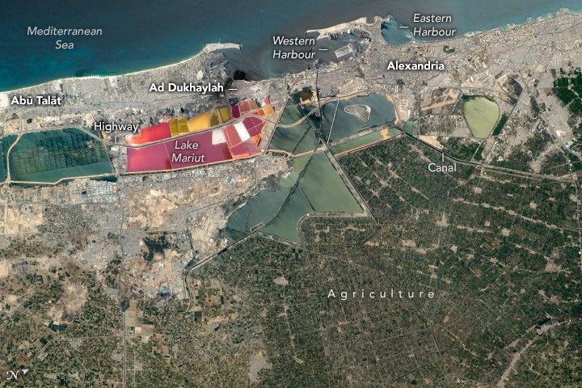

Egypt’s Mediterranean Coast
An astronaut aboard the International Space Station captured this detailed image of the Egyptian coastline. The 40-kilometer (25-mile) stretch of the Mediterranean coast shown here includes the ancient city of Alexandria—Egypt’s second-largest city by population and one of the country’s main ports.
Alexandria proper is part of a continuous urban area, visible as the gray hues that stretch along the coastline and extend inland. Other cities in the view are Dakheila, Al ‘Ajamī (El Agamy), and Abū Talāt. In contrast, green agricultural land, likely including fields of barley, maize, rice, and wheat, dominates the lower-right portion of the scene.
Alexandria was developed on the narrow strip of dry land directly west of the River Nile Delta, between the Mediterranean Sea and Lake Mariut (Buḩayrat Maryū). Several harbors occupy protected embayments on the coastline: the Western Harbour, Eastern Harbour, and the Ad-Dikhīlah New Harbour east of the petrochemical center of Ad Dukhaylah.
The coastal urban zone extends east and west of Alexandria. Urban development to the west follows two major highways and extends another 70 kilometers (45 miles) beyond this scene to Al ‘Alamayn (El ‘Alamein). The cityscape also extends eastward beyond this scene to the Rosetta Branch of the Nile River. Nile water is diverted to Alexandria via a canal visible on the right side of the image.
Some of the most vivid features in the photo are the salt ponds that now occupy the bed of Lake Mariut. The varied colors of the ponds are related to specific salt-loving organisms (halophiles). The type of organism present is governed by the salinity and temperature of each salt pond.